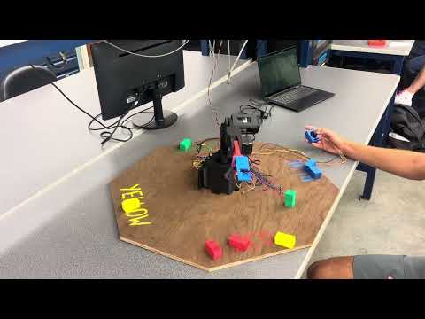
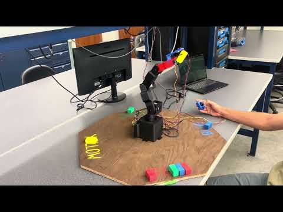
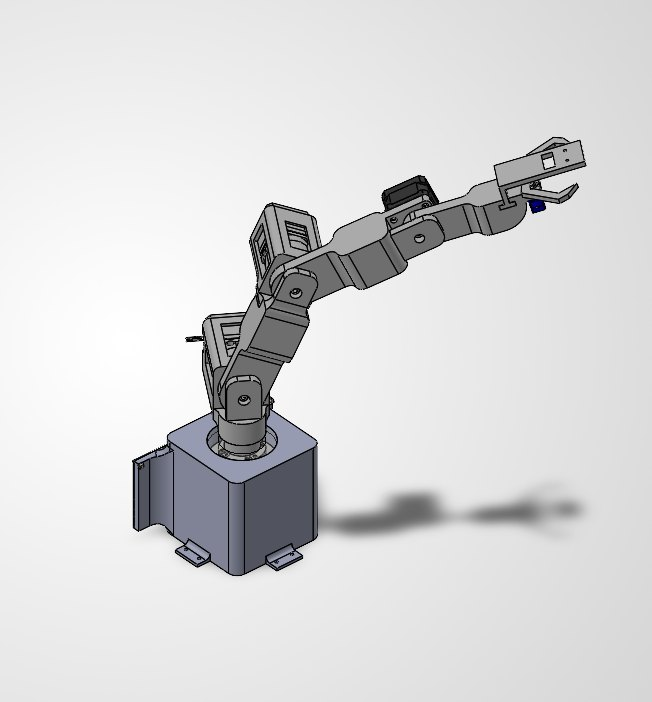
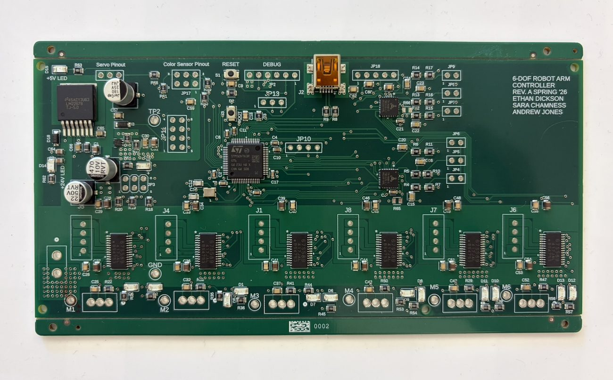
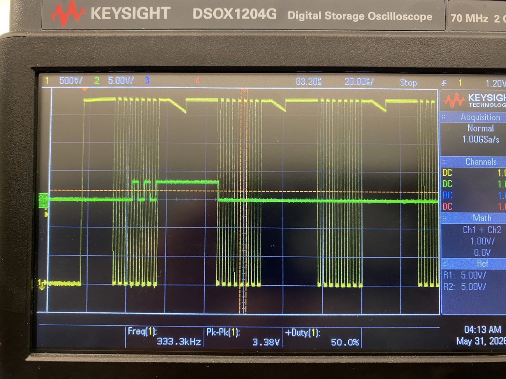

4.5-DOF Color-Sorting Robotic Arm
A semi-autonomous arm: you joystick the end effector over a foam block, then it takes over — reading the block's color and sorting it into the matching bin. Four stepper-driven joints and a servo gripper, run by a custom STM32 controller. I owned the motion subsystem and its electronics.
- My role
- Motion & actuation — firmware + electronics
- Team
- 3 (teammates: joystick / state machine, color sensing)
- Stack
- STM32H7 · C · TMC429 · SPI · custom PCB



The problem
The ME 507 term project was to build a mechatronic device that senses and acts on the physical world. Our team built a robotic arm that identifies foam blocks by color and sorts them. It runs semi-autonomously: the operator levels the arm and presses the joystick to zero the joints, drives the end effector over a block, and presses again — from there the arm reads the block's color with an end-effector sensor, closes the gripper, and moves the block to the bin for that color.

System at a glance
- Four stepper-driven joints + a servo-actuated gripper — 4.5 DOF
- End-effector color sensor (TCS34725) over I²C
- Handheld joystick controller for manual positioning
- Custom STM32H7 control PCB driving everything
My role & the decisions
On a three-person team I owned the motion and actuation subsystem end to end — the electronics that drive the joints and the firmware that commands them. (Teammates owned the joystick/state machine and the color-sensing pipeline.)
Electronics & component selection
- Selected the actuation hardware: the TMC429 motion-control chips and the stepper drivers that sit under them.
- Contributed to the custom control PCB (designed in Fusion 360 Electronics, fabricated by JLCPCB) — the board that carries the STM32, drivers, and power.
- Sized the power stage and reserved headroom on the regulator for a wide input range.
Motion firmware
- Wrote the TMC429 SPI driver, stepper enable / safe-state control, and the radians-to-steps command layer.
- Built a trajectory / waypoint engine: motions are declared as waypoint structs (per-joint targets plus gripper state), so adding a new path is a data change, not new control code.

Rather than compute full inverse kinematics on the MCU, I command position targets and let the TMC429's onboard ramp generator handle acceleration and deceleration in hardware. It cuts the real-time computational load and keeps motion smooth — the trade is coordinating joints at the waypoint level instead of a continuous Cartesian path. I also chose the STM32H7 (double-precision FPU, clock headroom) over an F4 for marginal added cost.
What I changed, and why
- SPI bring-up was the hard part. Getting the STM32 talking to the TMC429s took several days and came down to two bugs: one in my chip-interface code, and one where the controller's reset line was being held high, keeping the chips in reset. I found both on the oscilloscope, watching the actual bus.
- Six colors → four. The classifier computes hue for six colors, but in testing red, yellow, green, and blue separated most reliably — so the final demo committed to those four rather than chase noisy edge cases.
- 24 V → 12 V. The board was designed to accept 24 V, but testing showed 12 V was plenty for the steppers; the switching regulator keeps wide-input headroom either way.

Results
The arm successfully demonstrated the full loop end to end — joystick-assisted block selection, color detection, gripping, and autonomous sorting. Formal cycle-time and repeatability metrics weren't recorded, so I'm not going to invent them; the demonstration and the design figures below are the honest evidence.
| Parameter | Value | Notes |
|---|---|---|
| Degrees of freedom | 4.5 | 4 steppers + servo gripper |
| Peak joint torque | 203 N·cm | base joint; FoS 1.4–4.5 across joints |
| Microstepping | 32× | 200 steps/rev base motors |
| Gearbox ratios (J1–J4) | 5 · 10 · 5 · 1 | — |
| Link lengths | 153 / 121 / 121 / 150 mm | — |
| Controller | STM32H7A3 | 8 MHz ext. crystal, custom PCB |
| Power | 12 V · 6 A | board tolerant to 24 V design |
What I'd build next
- Close the position loop. The joints run open-loop from a manual zero; adding homing switches (the PCB already reserves the inputs) would guarantee a repeatable origin every run.
- Measure it. Instrument sort success rate and cycle time so the "it works" claim becomes a number.
- Richer motion. With the ramping offloaded, there's MCU budget to coordinate joints into smoother blended paths rather than discrete waypoints.